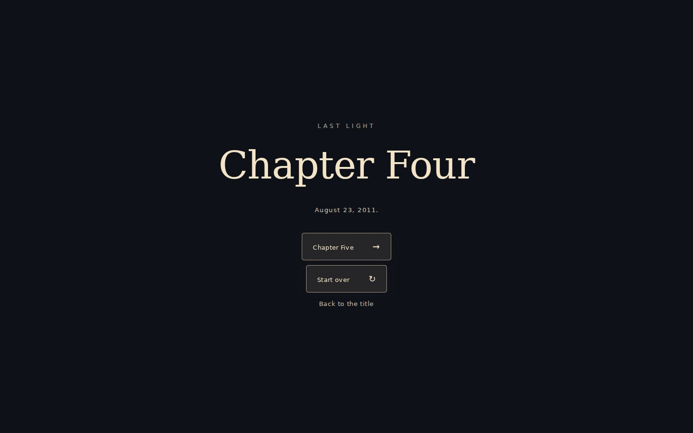
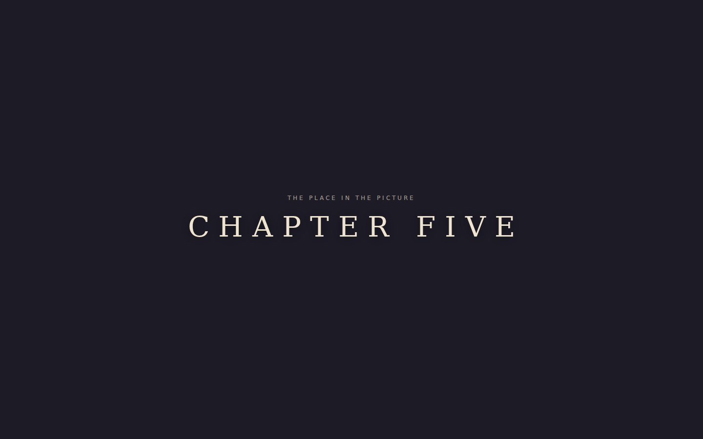

Last Light — Chapter Five QA
2 checks passed, 0 failed; 0 JavaScript errors; 0 WebGL warnings. Run incomplete: page.evaluate: Target page, context or browser has been closed (route A, gate choice sam). Walkthrough frames (numbered) are the WebGL picture at each checked beat, with the page's date, objective and caption drawn over it by the test; 00/01/99 and dev-* are full-page screenshots (dev-*: each DEV scene started from the selector).


n4-end · AUGUST 23, 2011 8:36 PM · 165,014 tris · 146 draws
YOU“Of what?”


c5-black · AUGUST 21, 2011 7:42 PM · 483,258 tris · 385 draws
There’s still a little light.